背景實驗紀錄
2026-11-06 下午，EP1 黃昏森林（S00 開場追逐）為主。五種效果，每個試過的做法都列出來，包括失敗的。點圖可以放大。
總表
| 效果 | 結果 | 以後怎麼做 |
|---|---|---|
| 一、前後格背景接得起來 | 成功 | 每格多附同一個地點的空景 |
| 二、做空景 | 成功 | 先畫量尺版（角色站直入鏡）量好比例，再用編輯畫面拿掉角色 |
| 三、同一張空景做出不同景別 | 還沒成功 | 下一步：照量尺版的角色大小算出要裁多少 |
| 四、換方向看同一個地點 | 成功 | 附空景＋連戲清單（哪個地標在畫面哪裡） |
| 五、鏡頭往後退 | 成功 | 深度圖逐點縮放＋編輯畫面只補灰色，點名補上新東西 |
一、前後格背景接得起來
原本每格各畫各的，同一個地點每格的森林都長得不一樣。
做法 1：編輯畫面打開這一格，附上一格當參考，只換背景 有條件成功
在 Flow 打開這格的圖（編輯畫面），＋ 附上一格（先改名成 EXP Sxx 才搜得到），寫「人物、構圖、大小都不變，只把背景換成附圖的地點」。程式 exp_bg.py。
Prompt（中英對照）S00-2 換背景（參考 S00-1）；S03-3 那次的原文沒有存到
Change ONLY the background. Keep every character, animal and object in this image exactly as it is: the same pose, size, position in the frame, clothes, mud, props and expression, and keep the same camera angle, height and framing. Replace everything around them so it is clearly the SAME place as in the attached image EXP S00-1: the same location, the same kind of trees, plants, ground, walls or furniture, and the same time of day, light and colors. Do NOT add any person or animal from the attached image that is not already in this image. Same flat 2D cartoon style with thick black outlines.
S03-3 成功：人物沒動，背景換成 S03-2 的空地。S00-2 失敗：上一格 S00-1 也是 HERO 被暴龍追，Flow 搞混，把整張畫成 S00-1 的構圖。上下兩格角色相同、動作相近就會失敗。另外編輯會變成原圖的新版本，只能編輯已經定案的圖。

每列：參考的上一格 → 原圖 → 換完背景。第一列 S00-2 失敗、第二列 S03-3 成功。
做法 2：每格多附同一張空景 成功
原 prompt 不動，多附這個地點的空景（BGDUSK），在 Setting 前加一句「背景是空景裡的同一個地方，照這格自己的鏡頭畫」。程式 plate_shots.py。
Prompt（中英對照）S00-1 的完整 prompt（加的那句在 Setting 前）
Scene S00-1, 16:9. Generate only 1 image. Flat 2D cartoon illustration in exactly the same style as the attached character reference sheets: thick clean black outlines, flat warm earthy colors, simple shapes, subtle paper texture. NOT realistic, NOT 3D, no extra shading, no sketchy hatching, no photographic lighting. No text, no letters, no numbers anywhere. What happens: HERO sprints straight toward the camera out of a deep forest, arms flailing; far behind him TEEN chases, small in the distance. HERO has NO helmet (it was stolen earlier): his messy black hair is showing; his clothes are muddy; the camera hangs on a strap across his chest. Camera: wide shot, eye-level camera, normal lens (natural perspective). HERO (the stick-figure student) is in the center middle ground of the frame, seen from the front, facing the camera; whole body visible. The teenage T. rex is in the center background of the frame, seen from the front, facing the camera. Depth: HERO (the stick-figure student) is CLOSER to the camera than the teenage T. rex (HERO (the stick-figure student) in front, the teenage T. rex behind). Size: the size relation between the teenage T. rex and HERO follows the attached scale chart (their real sizes side by side); never shrink the teenage T. rex. In THIS shot the teenage T. rex stands about 2.7 times as far from the camera as HERO, so on screen the teenage T. rex looks only that much smaller next to HERO than on the chart. Place: the attached background plate BGDUSK shows this exact location, empty. The background of this shot must be that same place, with the same trees, ground, landmarks, colors and light, seen from THIS shot's camera position and angle; take only the place from it, not its framing. Setting (besides what the action above already names, add no landmarks or objects that are not listed here): a forest trail in orange sunset light under the feet of the teenage T. rex, stretching from the foreground into the distance, on the center and right; a dense Cretaceous forest of cycads, ginkgos and conifers behind, across the whole frame; a dense Cretaceous forest of cycads, ginkgos and conifers continuing into the distance far in the distance, on the left and right; a forest trail in orange sunset light continuing into the distance far in the distance, on the center. Light: orange sunset light, backlit: the sun is in front of the camera. SKIN COLOR (very important): HERO's face, neck and hands are PURE PAPER WHITE #FFFFFF exactly like on their sheets, in EVERY lighting, including orange sunset light, blue night light or dark forest: do NOT tint their skin with the scene's light color and do NOT give them a peach, beige, tan or any realistic skin tone. Both hands are the same white, simple rounded cartoon hands, no fingernails, no knuckle wrinkles. Only the background and clothes take the scene's lighting. HERO must look exactly like the attached HERO sheet: round thin black glasses (always on his face; seen whenever his face is visible), small solid black DOT eyes (never big round eyes with pupils), short messy black hair, grey hoodie under an oversized khaki vest. Both of his wrists are bare. He wears his brown backpack on his back (as on the HERO sheet), straps over both shoulders. He has LOST his pith helmet: no helmet, his messy black hair is showing. TEEN must look exactly like the attached TEEN sheet: a teenage T. rex with the big deep boxy T. rex head, tiny arms and very long legs, tan-brown with bold dark stripes, big yellow eyes. NOT a raptor. Props must match the attached PROPS sheet exactly: the boxy silver-and-black compact camera with a big round lens and a screen on the back. Vegetation: a Late Cretaceous forest, mainly tall conifers (sequoia and swamp cypress) with palm-like cycads, tree ferns, ferns and horsetails, and only a few broadleaf trees. Nothing that looks like a modern oak, maple or birch forest, no lawn grass. Color: sunset, orange-red sky, dusty orange haze, long dark shadows. DUST (scaled to weight and speed, a small secondary detail that never hides or upstages the characters): HERO's running feet kick up small puffs of dust at ankle height. TEEN's heavy feet kick up thicker puffs of dust up to a human's knee. Anatomy check: every dinosaur has exactly ONE tail (when it faces the camera head-on the tail is mostly hidden behind its body), the correct number of legs and arms, and appears only once. The ONLY characters in this picture are HERO (the stick-figure student) and the teenage T. rex: no other people, dinosaurs or animals anywhere. Each character appears only once.
黃昏森林 7 格背景明顯一致：同一片森林、同一條路、夕陽在同一個位置。構圖沒有被空景帶走。顏色會跟著空景變暗。但它把整張空景原樣搬進每一格，這是效果三的問題。
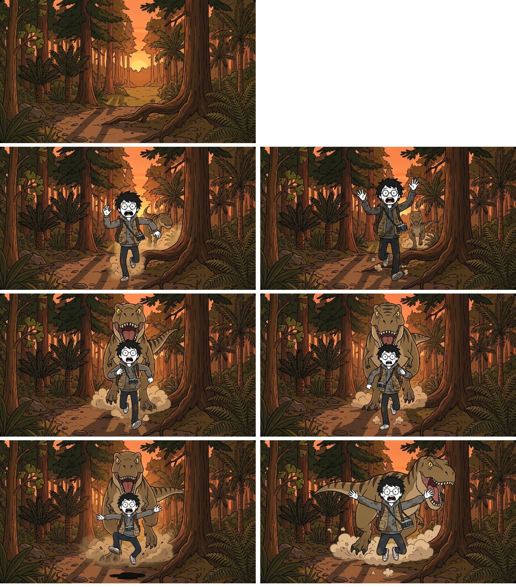
最上：空景 BGDUSK。下面三列：S00-1、S00-2、S00-3 附空景後各兩張，背景幾乎一模一樣。
二、做空景（沒有角色的背景）
每個地點一張，之後每一格都拿它當背景參考。正式流程裡空景是第一步，那時還沒有任何分鏡圖。
做法 1：地形照地圖檔寫，附道具設定圖對畫風 成功
地形、物件只照 maps/*.json 的描述寫，附 REF_PROPS（只對畫風、不畫裡面的東西），實驗室附 REF_LAB；寫明沒有任何人和恐龍。每個地點 4 張。程式 plates.py。
Prompt（中英對照）黃昏森林
Scene BGDUSK, 16:9. Generate only 1 image. A wide establishing shot (long shot) from eye level, showing the whole place, in exactly the same flat 2D cartoon style as the attached reference sheet: thick clean black outlines, flat warm earthy colors, simple shapes, hand-drawn look. Use the attached sheet ONLY for the drawing style; do NOT draw any of the objects on it. The place: a narrow forest trail running from left to right across the picture through a dense Cretaceous forest of tall conifers, cycads, palms and ginkgos; a big tree root sticks out of the ground beside the trail; beyond the trail the trees open into a forest clearing. Sunset: warm orange light, the low sun glowing between the trunks, long shadows across the trail. This is an EMPTY background plate: there are NO people, NO characters and NO animals or dinosaurs anywhere in the picture. No text, no captions.
Prompt（中英對照）HERO 的房間
Scene BGHOME, 16:9. Generate only 1 image. A wide establishing shot (long shot) from eye level, showing the whole place, in exactly the same flat 2D cartoon style as the attached reference sheet: thick clean black outlines, flat warm earthy colors, simple shapes, hand-drawn look. Use the attached sheet ONLY for the drawing style; do NOT draw any of the objects on it. The place: a small, messy student studio room about 5 by 4.5 meters, seen from the doorway side: a worn wooden floor and plain off-white walls; against the back wall a cluttered wooden desk under a window with half-closed blinds; on the desk a thick stack of unpaid bills stamped with red marks (no readable text), a smartphone on a charging cable, an unplugged yellow stun gun and a desk lamp; a single wall outlet above the desk; a desk chair in front of the desk; an unmade bed in the left corner. Night: the desk lamp is the only light, a warm pool of light on the desk and the rest of the room dim. This is an EMPTY background plate: there are NO people, NO characters and NO animals or dinosaurs anywhere in the picture. No text, no captions.
Prompt（中英對照）實驗室
Scene BGLAB, 16:9. Generate only 1 image. A wide establishing shot (long shot) from eye level, showing the whole place, in exactly the same flat 2D cartoon style as the attached reference sheet: thick clean black outlines, flat warm earthy colors, simple shapes, hand-drawn look. The attached sheet is the design of this laboratory: draw the same room with the same objects. The place: a laundromat basement laboratory with bare concrete walls and a bare concrete floor, the whole room visible: on the left wall a big green chalkboard and a movie poster of a T. rex and a Stegosaurus with the title JURASSIC PARK in plain letters; in the middle of the back wall the ring-shaped metal time machine standing on a wooden pallet, with a big red lever on a wooden box beside it; a cluttered computer console with old monitors in the back right corner; a cluttered workbench along the right wall; the stairs up and a padlocked door covered in danger symbols in the back left corner; an open, empty concrete floor in the middle of the room. Indoors: hanging bulbs and old fluorescent light. The time machine is switched off and does not glow. This is an EMPTY background plate: there are NO people, NO characters and NO animals or dinosaurs anywhere in the picture. No captions and no other text besides the poster title.
Prompt（中英對照）剛到的空地
Scene BGARRIVE, 16:9. Generate only 1 image. A wide establishing shot (long shot) from eye level, showing the whole place, in exactly the same flat 2D cartoon style as the attached reference sheet: thick clean black outlines, flat warm earthy colors, simple shapes, hand-drawn look. Use the attached sheet ONLY for the drawing style; do NOT draw any of the objects on it. The place: a forest clearing in a Cretaceous forest: in the foreground a patch of shallow mud on the forest floor (only a thin layer of mud, not a pit); beyond it a thick patch of tall ferns; on the left a big round boulder covered in thick green moss; behind them a wide slow river, and on the far bank a strip of flat muddy ground and a distant, open, hazy forest; dense forest of cycads, ginkgos and conifers on both sides of the clearing. Morning: soft hazy sunlight from the left. This is an EMPTY background plate: there are NO people, NO characters and NO animals or dinosaurs anywhere in the picture. No text, no captions.
Prompt（中英對照）河岸
Scene BGRIVER, 16:9. Generate only 1 image. A wide establishing shot (long shot) from eye level, showing the whole place, in exactly the same flat 2D cartoon style as the attached reference sheet: thick clean black outlines, flat warm earthy colors, simple shapes, hand-drawn look. Use the attached sheet ONLY for the drawing style; do NOT draw any of the objects on it. The place: a wide, flat stretch of bare mud along a wide slow river: the river runs across the middle of the picture; on the far bank a strip of flat muddy ground and a distant, open, hazy forest; on the near bank a clump of ferns and a thin young tree; on the right, at the forest edge, a huge tree; dense Cretaceous forest along the near side. Morning: soft hazy sunlight from the left. This is an EMPTY background plate: there are NO people, NO characters and NO animals or dinosaurs anywhere in the picture. No text, no captions.
Prompt（中英對照）森林小路
Scene BGPATH, 16:9. Generate only 1 image. A wide establishing shot (long shot) from eye level, showing the whole place, in exactly the same flat 2D cartoon style as the attached reference sheet: thick clean black outlines, flat warm earthy colors, simple shapes, hand-drawn look. Use the attached sheet ONLY for the drawing style; do NOT draw any of the objects on it. The place: a narrow trodden forest trail running from left to right through a dense Cretaceous forest of cycads, ginkgos and conifers; a fallen log lies across the trail on the right. Midday: bright sun from above, dappled shadows on the trail. This is an EMPTY background plate: there are NO people, NO characters and NO animals or dinosaurs anywhere in the picture. No text, no captions.
Prompt（中英對照）乾河床
Scene BGRIVERBED, 16:9. Generate only 1 image. A wide establishing shot (long shot) from eye level, showing the whole place, in exactly the same flat 2D cartoon style as the attached reference sheet: thick clean black outlines, flat warm earthy colors, simple shapes, hand-drawn look. Use the attached sheet ONLY for the drawing style; do NOT draw any of the objects on it. The place: a wide dry riverbed of cracked mud and pebbles: on the left a wide shallow river with a wet sandy bank, and on its far side a strip of flat muddy ground and a distant, open, hazy forest; on the right a low earthen bank topped with a dense thicket of tall ferns and a forest of cycads and ginkgo trees; on the dry riverbed a flat-topped boulder about 1 m high, a long bleached driftwood log and a small pile of stones; one very tall conifer tree on the bank. Afternoon: sunny, clear blue sky. This is an EMPTY background plate: there are NO people, NO characters and NO animals or dinosaurs anywhere in the picture. No text, no captions.
Prompt（中英對照）林間空地
Scene BGCLEARING, 16:9. Generate only 1 image. A wide establishing shot (long shot) from eye level, showing the whole place, in exactly the same flat 2D cartoon style as the attached reference sheet: thick clean black outlines, flat warm earthy colors, simple shapes, hand-drawn look. Use the attached sheet ONLY for the drawing style; do NOT draw any of the objects on it. The place: an open forest clearing with leaf litter and low plants, surrounded by a dense Cretaceous forest of cycads, ginkgos and conifers: a low fallen log lies in the middle of the clearing; on the right a huge fallen tree trunk is propped up at an angle with a gap underneath; on the left a very dark gap between the trees. Afternoon: warm sunlight from the left, a little dim under the canopy. This is an EMPTY background plate: there are NO people, NO characters and NO animals or dinosaurs anywhere in the picture. No text, no captions.
9 個地點都畫出來，都沒有角色。問題：空景裡沒有人，看不出角色該多大。


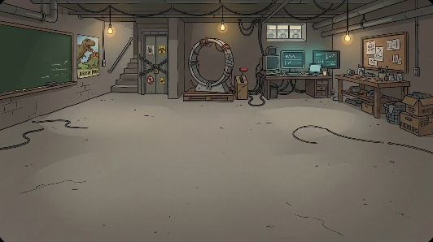


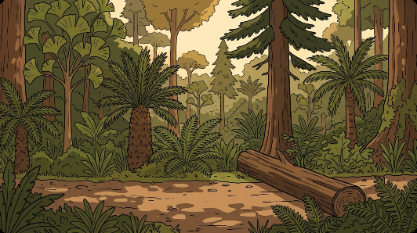


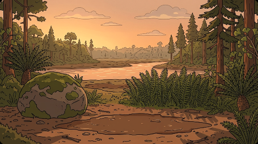
做法 2：量尺版——先畫角色站直入鏡，量好比例再拿掉 成功
同樣的地形 prompt，加上 HERO（10 m）和 TEEN（18 m）站直、全身入鏡、不互相遮。量兩者的高度，跟「比例圖 ÷ 遠近比」對照，挑最準的一張；再在編輯畫面「只拿掉角色和影子」。程式 scale_plate.py、remove_chars.py，數字存 plates/dusk_scale.json。
Prompt（中英對照）量尺版 A
Scene SCALEA, 16:9. Generate only 1 image. Flat 2D cartoon illustration in exactly the same style as the attached character reference sheets: thick clean black outlines, flat warm earthy colors, simple shapes, subtle paper texture. NOT realistic, NOT 3D, no extra shading, no sketchy hatching, no photographic lighting. No text, no letters, no numbers anywhere. Camera: a wide-angle long shot taken with a wide-angle lens: the camera is raised about 3 meters above the trail and tilted slightly down, so the ground is visible from right in front of the camera all the way into the distance, and the picture is wide from side to side, showing the whole place. The place: a narrow forest trail that starts right in front of the camera and runs straight away from it into the distance, through a dense Cretaceous forest of tall conifers, cycads, palms and ginkgos on both sides; a big tree root sticks out of the ground beside the trail; far along the trail the trees open into a forest clearing, and the low sun sits at the far end. Sunset: warm orange light, backlit by the low sun at the far end of the trail, long shadows stretching along the trail toward the camera. Vegetation: a Late Cretaceous forest, mainly tall conifers (sequoia and swamp cypress) with palm-like cycads, tree ferns, ferns and horsetails, and only a few broadleaf trees. Nothing that looks like a modern oak, maple or birch forest, no lawn grass. What happens: nothing moves; this is a size reference picture. HERO stands still on the trail about 10 meters from the camera, standing straight, facing the camera, arms at his sides, his whole body visible from head to feet. TEEN stands still on the same trail further back, about 18 meters from the camera, behind HERO and a little to one side so that HERO does not hide any part of it; it stands upright facing the camera, its whole body visible from head to both feet. Both stand with their feet on the ground of the trail. Size: the size relation between TEEN and HERO follows the attached scale chart (their real sizes side by side: TEEN is 2.89 m tall, HERO 1.72 m); never shrink TEEN. TEEN stands about 1.8 times as far from the camera as HERO, so on screen TEEN looks only that much smaller next to HERO than on the chart. Both are in scale with the place: the trail is about 2 meters wide, the conifer trunks are thicker than HERO's body and much taller than TEEN. SKIN COLOR (very important): HERO's face, neck and hands are PURE PAPER WHITE #FFFFFF exactly like on their sheets, in EVERY lighting, including orange sunset light, blue night light or dark forest: do NOT tint their skin with the scene's light color and do NOT give them a peach, beige, tan or any realistic skin tone. Both hands are the same white, simple rounded cartoon hands, no fingernails, no knuckle wrinkles. Only the background and clothes take the scene's lighting. HERO must look exactly like the attached HERO sheet: round thin black glasses (always on his face; seen whenever his face is visible), small solid black DOT eyes (never big round eyes with pupils), short messy black hair, grey hoodie under an oversized khaki vest. Both of his wrists are bare. He wears his brown backpack on his back (as on the HERO sheet), straps over both shoulders. He has LOST his pith helmet: no helmet, his messy black hair is showing. TEEN must look exactly like the attached TEEN sheet: a teenage T. rex with the big deep boxy T. rex head, tiny arms and very long legs, tan-brown with bold dark stripes, big yellow eyes. NOT a raptor. Anatomy check: every dinosaur has exactly ONE tail (when it faces the camera head-on the tail is mostly hidden behind its body), the correct number of legs and arms, and appears only once. The ONLY characters in this picture are HERO and TEEN: no other people, dinosaurs or animals anywhere. Each character appears only once.
Prompt（中英對照）量尺版 B
Scene SCALEB, 16:9. Generate only 1 image. Flat 2D cartoon illustration in exactly the same style as the attached character reference sheets: thick clean black outlines, flat warm earthy colors, simple shapes, subtle paper texture. NOT realistic, NOT 3D, no extra shading, no sketchy hatching, no photographic lighting. No text, no letters, no numbers anywhere. Camera: an extreme long shot taken with a wide-angle lens from high up: the camera is about 15 meters above the ground at the edge of the forest, looking down along the trail, so the whole trail, the clearing and the forest around them are seen from near to far, small in a big landscape. The place: a narrow forest trail that starts right in front of the camera and runs straight away from it into the distance, through a dense Cretaceous forest of tall conifers, cycads, palms and ginkgos on both sides; a big tree root sticks out of the ground beside the trail; far along the trail the trees open into a forest clearing, and the low sun sits at the far end. Sunset: warm orange light, backlit by the low sun at the far end of the trail, long shadows stretching along the trail toward the camera. Vegetation: a Late Cretaceous forest, mainly tall conifers (sequoia and swamp cypress) with palm-like cycads, tree ferns, ferns and horsetails, and only a few broadleaf trees. Nothing that looks like a modern oak, maple or birch forest, no lawn grass. What happens: nothing moves; this is a size reference picture. HERO stands still on the trail about 40 meters from the camera, standing straight, facing the camera, arms at his sides, his whole body visible from head to feet. TEEN stands still on the same trail further back, about 55 meters from the camera, behind HERO and a little to one side so that HERO does not hide any part of it; it stands upright facing the camera, its whole body visible from head to both feet. Both stand with their feet on the ground of the trail. Size: the size relation between TEEN and HERO follows the attached scale chart (their real sizes side by side: TEEN is 2.89 m tall, HERO 1.72 m); never shrink TEEN. TEEN stands about 1.4 times as far from the camera as HERO, so on screen TEEN looks only that much smaller next to HERO than on the chart. Both are in scale with the place: the trail is about 2 meters wide, the conifer trunks are thicker than HERO's body and much taller than TEEN. SKIN COLOR (very important): HERO's face, neck and hands are PURE PAPER WHITE #FFFFFF exactly like on their sheets, in EVERY lighting, including orange sunset light, blue night light or dark forest: do NOT tint their skin with the scene's light color and do NOT give them a peach, beige, tan or any realistic skin tone. Both hands are the same white, simple rounded cartoon hands, no fingernails, no knuckle wrinkles. Only the background and clothes take the scene's lighting. HERO must look exactly like the attached HERO sheet: round thin black glasses (always on his face; seen whenever his face is visible), small solid black DOT eyes (never big round eyes with pupils), short messy black hair, grey hoodie under an oversized khaki vest. Both of his wrists are bare. He wears his brown backpack on his back (as on the HERO sheet), straps over both shoulders. He has LOST his pith helmet: no helmet, his messy black hair is showing. TEEN must look exactly like the attached TEEN sheet: a teenage T. rex with the big deep boxy T. rex head, tiny arms and very long legs, tan-brown with bold dark stripes, big yellow eyes. NOT a raptor. Anatomy check: every dinosaur has exactly ONE tail (when it faces the camera head-on the tail is mostly hidden behind its body), the correct number of legs and arms, and appears only once. The ONLY characters in this picture are HERO and TEEN: no other people, dinosaurs or animals anywhere. Each character appears only once.
Prompt（中英對照）量尺版 C
Scene SCALEC, 16:9. Generate only 1 image. Flat 2D cartoon illustration in exactly the same style as the attached character reference sheets: thick clean black outlines, flat warm earthy colors, simple shapes, subtle paper texture. NOT realistic, NOT 3D, no extra shading, no sketchy hatching, no photographic lighting. No text, no letters, no numbers anywhere. Camera: an extreme long shot seen from high above, like an aerial view from a drone about 40 meters up in the air, looking down at a steep angle along the trail: the treetops are below the camera, the trail is a thin path through the forest canopy, and the whole forest, the trail and the clearing at its far end are visible, the characters tiny in a big landscape. The place: a narrow forest trail that starts right in front of the camera and runs straight away from it into the distance, through a dense Cretaceous forest of tall conifers, cycads, palms and ginkgos on both sides; a big tree root sticks out of the ground beside the trail; far along the trail the trees open into a forest clearing, and the low sun sits at the far end. Sunset: warm orange light, backlit by the low sun at the far end of the trail, long shadows stretching along the trail toward the camera. Vegetation: a Late Cretaceous forest, mainly tall conifers (sequoia and swamp cypress) with palm-like cycads, tree ferns, ferns and horsetails, and only a few broadleaf trees. Nothing that looks like a modern oak, maple or birch forest, no lawn grass. What happens: nothing moves; this is a size reference picture. HERO stands still on the trail about 60 meters from the camera, standing straight, facing the camera, arms at his sides, his whole body visible from head to feet. TEEN stands still on the same trail further back, about 70 meters from the camera, behind HERO and a little to one side so that HERO does not hide any part of it; it stands upright facing the camera, its whole body visible from head to both feet. Both stand with their feet on the ground of the trail. Size: the size relation between TEEN and HERO follows the attached scale chart (their real sizes side by side: TEEN is 2.89 m tall, HERO 1.72 m); never shrink TEEN. TEEN stands about 1.2 times as far from the camera as HERO, so on screen TEEN looks only that much smaller next to HERO than on the chart. Both are in scale with the place: the trail is about 2 meters wide, the conifer trunks are thicker than HERO's body and much taller than TEEN. SKIN COLOR (very important): HERO's face, neck and hands are PURE PAPER WHITE #FFFFFF exactly like on their sheets, in EVERY lighting, including orange sunset light, blue night light or dark forest: do NOT tint their skin with the scene's light color and do NOT give them a peach, beige, tan or any realistic skin tone. Both hands are the same white, simple rounded cartoon hands, no fingernails, no knuckle wrinkles. Only the background and clothes take the scene's lighting. HERO must look exactly like the attached HERO sheet: round thin black glasses (always on his face; seen whenever his face is visible), small solid black DOT eyes (never big round eyes with pupils), short messy black hair, grey hoodie under an oversized khaki vest. Both of his wrists are bare. He wears his brown backpack on his back (as on the HERO sheet), straps over both shoulders. He has LOST his pith helmet: no helmet, his messy black hair is showing. TEEN must look exactly like the attached TEEN sheet: a teenage T. rex with the big deep boxy T. rex head, tiny arms and very long legs, tan-brown with bold dark stripes, big yellow eyes. NOT a raptor. Anatomy check: every dinosaur has exactly ONE tail (when it faces the camera head-on the tail is mostly hidden behind its body), the correct number of legs and arms, and appears only once. The ONLY characters in this picture are HERO and TEEN: no other people, dinosaurs or animals anywhere. Each character appears only once.
Prompt（中英對照）拿掉角色
Remove HERO and the dinosaur completely from this picture, together with their shadows, and fill in the trail, ground and forest that were behind them. Keep everything else exactly the same: the same camera position and framing, the same trees, trail, plants, light and colors. Nothing else changes. No people and no animals in the result.
| 組 | 鏡頭 | HERO 占畫面高 | TEEN÷HERO 量到／應該 | 結果 |
|---|---|---|---|---|
| A | 廣角＋遠景，架高 3 m | 48% | 0.99／0.93（差 6%） | 選用 |
| B | 寫「15 m 高」想做大遠景 | 17% | 1.10／1.22 | 沒變成大遠景，還是平視 |
| C | 寫「高空俯視、樹冠在鏡頭下方」 | 11% | 1.31／1.44（差 9%） | 真的大遠景 |
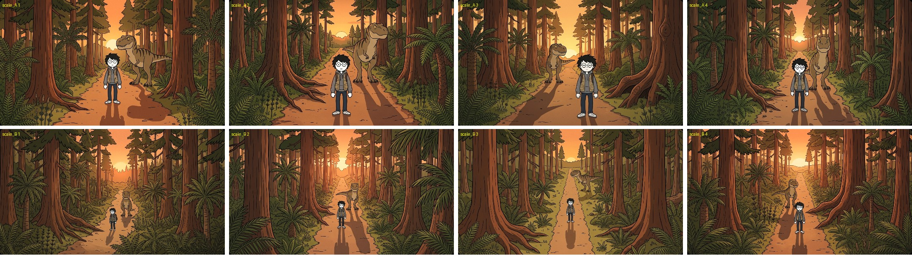
量尺版 A（上）、B（下）各 4 張。A3 的 TEEN 小了 29%、B3/B4 也不準，沒選。

左：量尺版；右：拿掉角色的空景。拿掉後，原本被角色擋住的那段小路被重畫成別的形狀（A 從彎路變直路）。
三、同一張空景做出不同景別
空景是遠景，比較近的格子（全景、中景）應該只看到空景的一部分。
做法 1：直接附整張空景 失敗
Flow 把整張空景原樣搬進每一格，S00-1（遠景）、S00-2（全景・恐龍出框）、S00-3（全景）的背景範圍一模一樣。S00-1 也沒辦法比空景更遠。（圖見效果一做法 2）
做法 2：從空景裁 60% 上傳，附給那一格 失敗
1K 空景，貼底邊裁 60%（保留腳下的小路），放大回原尺寸，上傳成 BG_S00-2.jpg，附給 S00-2、S00-3。程式 crop_shots.py。
Prompt（中英對照）S00-2 的完整 prompt（背景句在裡面）
Scene S00-2, 16:9. Generate only 1 image. Flat 2D cartoon illustration in exactly the same style as the attached character reference sheets: thick clean black outlines, flat warm earthy colors, simple shapes, subtle paper texture. NOT realistic, NOT 3D, no extra shading, no sketchy hatching, no photographic lighting. No text, no letters, no numbers anywhere. What happens: HERO, big in the frame, is still sprinting hard (arms pumping, body leaning forward, mouth open in panic); right behind him TEEN faces the camera head-on, jaws wide open just above his head, closing in. The stretch of path where they were in the previous image is now far behind them in the background. HERO has NO helmet (it was stolen earlier): his messy black hair is showing; his clothes are muddy; the camera hangs on a strap across his chest. Camera: full shot (whole body from head to feet), eye-level camera, normal lens (natural perspective). HERO (the stick-figure student) is in the center middle ground of the frame, seen from the front, facing the camera; whole body visible. The teenage T. rex is in the center middle ground of the frame, seen from the front, facing the camera. Size: the size relation between the teenage T. rex and HERO follows the attached scale chart (their real sizes side by side); never shrink the teenage T. rex. In THIS shot they are about the same distance from the camera, so their sizes look the same as on the chart. Background: the attached image BG_S00-2.jpg is exactly the background of this shot, what this camera sees behind the characters. Draw the characters in front of it and keep its trees, trail, colors and light as they are. Setting (besides what the action above already names, add no landmarks or objects that are not listed here): a forest trail in orange sunset light under the feet of the teenage T. rex, stretching from the foreground into the distance, on the center and right; a dense Cretaceous forest of cycads, ginkgos and conifers behind, across the whole frame; a dense Cretaceous forest of cycads, ginkgos and conifers continuing into the distance far in the distance, on the left and right; a forest trail in orange sunset light continuing into the distance far in the distance, on the center. Light: orange sunset light, backlit: the sun is in front of the camera. SKIN COLOR (very important): HERO's face, neck and hands are PURE PAPER WHITE #FFFFFF exactly like on their sheets, in EVERY lighting, including orange sunset light, blue night light or dark forest: do NOT tint their skin with the scene's light color and do NOT give them a peach, beige, tan or any realistic skin tone. Both hands are the same white, simple rounded cartoon hands, no fingernails, no knuckle wrinkles. Only the background and clothes take the scene's lighting. HERO must look exactly like the attached HERO sheet: round thin black glasses (always on his face; seen whenever his face is visible), small solid black DOT eyes (never big round eyes with pupils), short messy black hair, grey hoodie under an oversized khaki vest. Both of his wrists are bare. He wears his brown backpack on his back (as on the HERO sheet), straps over both shoulders. He has LOST his pith helmet: no helmet, his messy black hair is showing. TEEN must look exactly like the attached TEEN sheet: a teenage T. rex with the big deep boxy T. rex head, tiny arms and very long legs, tan-brown with bold dark stripes, big yellow eyes. NOT a raptor. Props must match the attached PROPS sheet exactly: the boxy silver-and-black compact camera with a big round lens and a screen on the back. Vegetation: a Late Cretaceous forest, mainly tall conifers (sequoia and swamp cypress) with palm-like cycads, tree ferns, ferns and horsetails, and only a few broadleaf trees. Nothing that looks like a modern oak, maple or birch forest, no lawn grass. Color: sunset, orange-red sky, dusty orange haze, long dark shadows. DUST (scaled to weight and speed, a small secondary detail that never hides or upstages the characters): HERO's running feet kick up small puffs of dust at ankle height. TEEN's heavy feet kick up thicker puffs of dust up to a human's knee. Action, not a pose: HERO is in full sprint, body leaning far forward, one foot off the ground, arms pumping, vest and hoodie flapping backward; he does NOT look at the camera. The ONLY characters in this picture are HERO (the stick-figure student) and the teenage T. rex: no other people, dinosaurs or animals anywhere. Each character appears only once.
背景真的變近了（樹根變大、夕陽在上方），但裁太多：背景被放大 1.67 倍，角色還是照原本的大小畫，跟背景一比，恐龍和 HERO 都顯得變小。
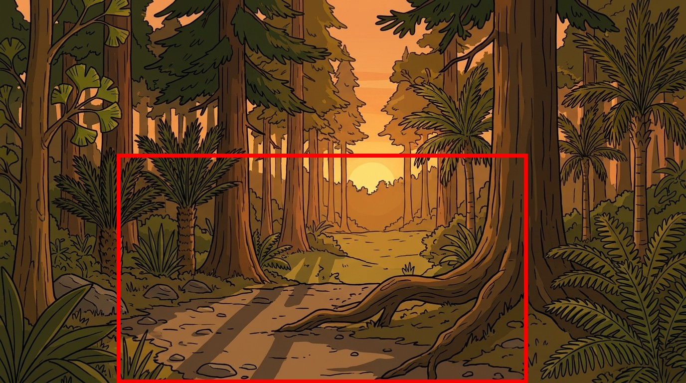
紅框＝裁的範圍（寬高各 60%）。

每格兩排：上＝附整張空景，下＝附裁過的背景。
下一步（還沒試）：照量尺版算要裁多少
例：量尺版裡 HERO 站在那個位置高約畫面 48%，全景要他占約 75%，就從他站的位置裁 0.48 ÷ 0.75 ≈ 64%。恐龍照比例圖跟著算。
四、換方向看同一個地點（轉 90° 看恐龍側面）
站在 TEEN 左邊看牠的側面，背景是牠右手邊（空景左側）那片森林，看樹的位置能不能對得上。
五種 prompt 寫法
| 寫法 | 結果 | 說明 |
|---|---|---|
| 1 地標清單：空景左側從近到遠，換成新畫面從左到右 | 成功 | 大樹在恐龍背後、夕陽在右 |
| 2 極簡：只說「轉 90°」 | 失敗 | 沒轉，照抄原本視角，夕陽在正中間 |
| 3 地圖座標：用公尺寫每棵樹、鏡頭位置和方向 | 成功 | 3～4 張對 |
| 4 只用參考圖左半邊 | 一半 | 4 張裡一半沒轉過去 |
| 5 電影換機位＋連戲清單 | 最穩 | 4 張全對 |
程式 side_view.py，prompt 存在 plates/side_v1～5_prompt.txt。
Prompt（中英對照）寫法 1
Scene SIDEVIEW1, 16:9. Generate only 1 image. Flat 2D cartoon illustration in exactly the same style as the attached character reference sheets: thick clean black outlines, flat warm earthy colors, simple shapes, subtle paper texture. NOT realistic, NOT 3D, no extra shading, no sketchy hatching, no photographic lighting. No text, no letters, no numbers anywhere. This is the SAME place as the attached background plate BGDUSK_A, seen from a different direction: the camera now stands on the trail and has turned 90 degrees to the left, looking straight across the trail at the forest that is on the LEFT side of BGDUSK_A. The trail now runs from left to right across the bottom of the picture: the part of the trail that was near the camera in BGDUSK_A is now on the LEFT of the picture, and the far end of the trail with the setting sun is now on the RIGHT. Background, in order from left to right (these are the trees on the left side of BGDUSK_A, from near to far): on the far left, tall ferns and horsetails and a thick reddish-brown conifer trunk; in the middle, right behind TEEN, the huge reddish-brown conifer trunk whose big roots spread out across the ground onto the trail (the same tree as in BGDUSK_A); to the right of it, a slim palm-like cycad with a round crown of leaves, then a tall straight conifer trunk standing at the edge of the trail; on the far right, smaller conifers in the distance and the orange glow of the low sun. Light: sunset; the low sun is off to the RIGHT of the picture, warm orange light comes from the right, and long shadows stretch to the left along the trail. Camera: eye-level, normal lens, a full shot of TEEN. TEEN stands still on the trail in the middle of the picture, seen exactly from its left side (side profile), its head pointing to the LEFT of the picture, its whole body visible from the head to the tip of the tail, both feet on the ground. Size: TEEN is 2.89 m tall; the huge conifer trunk behind it is much thicker than TEEN's body and rises far above the top of the frame. TEEN must look exactly like the attached TEEN sheet: a teenage T. rex with the big deep boxy T. rex head, tiny arms and very long legs, tan-brown with bold dark stripes, big yellow eyes. NOT a raptor. Vegetation: a Late Cretaceous forest, mainly tall conifers (sequoia and swamp cypress) with palm-like cycads, tree ferns, ferns and horsetails, and only a few broadleaf trees. Nothing that looks like a modern oak, maple or birch forest, no lawn grass. Anatomy check: every dinosaur has exactly ONE tail (when it faces the camera head-on the tail is mostly hidden behind its body), the correct number of legs and arms, and appears only once. The ONLY character in this picture is TEEN: no people, no other dinosaurs or animals.
Prompt（中英對照）寫法 2
Scene SIDEVIEW2, 16:9. Generate only 1 image. Flat 2D cartoon illustration in exactly the same style as the attached character reference sheets: thick clean black outlines, flat warm earthy colors, simple shapes, subtle paper texture. NOT realistic, NOT 3D, no extra shading, no sketchy hatching, no photographic lighting. No text, no letters, no numbers anywhere. The attached image BGDUSK_A shows a forest trail. Draw the same place from a new angle: the camera has turned 90 degrees to the left, so we look across the trail at the forest on its left side, with the same trees. TEEN stands on the trail, seen from its left side, head to the left. TEEN must look exactly like the attached TEEN sheet: a teenage T. rex with the big deep boxy T. rex head, tiny arms and very long legs, tan-brown with bold dark stripes, big yellow eyes. NOT a raptor. Vegetation: a Late Cretaceous forest, mainly tall conifers (sequoia and swamp cypress) with palm-like cycads, tree ferns, ferns and horsetails, and only a few broadleaf trees. Nothing that looks like a modern oak, maple or birch forest, no lawn grass. Anatomy check: every dinosaur has exactly ONE tail (when it faces the camera head-on the tail is mostly hidden behind its body), the correct number of legs and arms, and appears only once. The ONLY character in this picture is TEEN: no people, no other dinosaurs or animals.
Prompt（中英對照）寫法 3
Scene SIDEVIEW3, 16:9. Generate only 1 image. Flat 2D cartoon illustration in exactly the same style as the attached character reference sheets: thick clean black outlines, flat warm earthy colors, simple shapes, subtle paper texture. NOT realistic, NOT 3D, no extra shading, no sketchy hatching, no photographic lighting. No text, no letters, no numbers anywhere. The attached image BGDUSK_A was taken looking north along a straight forest trail, with the sun setting in the north at the far end. Map of the place, seen from above, in meters: the trail is 2.5 m wide and runs south to north; x is the distance west of the trail's west edge, y is the distance north of where the BGDUSK_A camera stood. Trees on the west side: a thick conifer trunk at x 4, y 6; ferns and horsetails along the trail edge from y 3 to y 12; the huge conifer with big roots spreading east onto the trail at x 1, y 18; a slim palm-like cycad at x 3, y 26; a tall straight conifer trunk at x 0.5, y 32; small distant conifers beyond y 60. TEEN stands on the trail at y 18, right in front of the huge rooted conifer. NEW CAMERA for this picture: it stands on the east edge of the trail at y 18, 1.5 m above the ground, looking due WEST across the trail. So south (smaller y) is on the LEFT of the picture and north (larger y, toward the sun) is on the RIGHT. Draw exactly what this camera sees, using the trees from the map at their positions. Light: sunset; the low sun is off to the RIGHT of the picture, warm orange light comes from the right, and long shadows stretch to the left along the trail. Camera: eye-level, normal lens, a full shot of TEEN. TEEN stands still on the trail in the middle of the picture, seen exactly from its left side (side profile), its head pointing to the LEFT of the picture, its whole body visible from the head to the tip of the tail, both feet on the ground. Size: TEEN is 2.89 m tall; the huge conifer trunk behind it is much thicker than TEEN's body and rises far above the top of the frame. TEEN must look exactly like the attached TEEN sheet: a teenage T. rex with the big deep boxy T. rex head, tiny arms and very long legs, tan-brown with bold dark stripes, big yellow eyes. NOT a raptor. Vegetation: a Late Cretaceous forest, mainly tall conifers (sequoia and swamp cypress) with palm-like cycads, tree ferns, ferns and horsetails, and only a few broadleaf trees. Nothing that looks like a modern oak, maple or birch forest, no lawn grass. Anatomy check: every dinosaur has exactly ONE tail (when it faces the camera head-on the tail is mostly hidden behind its body), the correct number of legs and arms, and appears only once. The ONLY character in this picture is TEEN: no people, no other dinosaurs or animals.
Prompt（中英對照）寫法 4
Scene SIDEVIEW4, 16:9. Generate only 1 image. Flat 2D cartoon illustration in exactly the same style as the attached character reference sheets: thick clean black outlines, flat warm earthy colors, simple shapes, subtle paper texture. NOT realistic, NOT 3D, no extra shading, no sketchy hatching, no photographic lighting. No text, no letters, no numbers anywhere. Background: use ONLY the LEFT HALF of the attached image BGDUSK_A, the forest on the left of the trail, and show those same trees from the side, as if the camera stepped onto the trail and turned to face them. The trees that are close to the camera in BGDUSK_A (bottom left of that image) go to the LEFT of this picture; the trees farther along the trail (toward the sun) go to the RIGHT. Keep each tree's look: the huge reddish-brown trunk with big spreading roots, the slim palm-like cycad with a round crown, the tall straight trunk, the ferns and horsetails. The right half of BGDUSK_A is behind the camera and is not seen. Light: sunset; the low sun is off to the RIGHT of the picture, warm orange light comes from the right, and long shadows stretch to the left along the trail. Camera: eye-level, normal lens, a full shot of TEEN. TEEN stands still on the trail in the middle of the picture, seen exactly from its left side (side profile), its head pointing to the LEFT of the picture, its whole body visible from the head to the tip of the tail, both feet on the ground. Size: TEEN is 2.89 m tall; the huge conifer trunk behind it is much thicker than TEEN's body and rises far above the top of the frame. TEEN must look exactly like the attached TEEN sheet: a teenage T. rex with the big deep boxy T. rex head, tiny arms and very long legs, tan-brown with bold dark stripes, big yellow eyes. NOT a raptor. Vegetation: a Late Cretaceous forest, mainly tall conifers (sequoia and swamp cypress) with palm-like cycads, tree ferns, ferns and horsetails, and only a few broadleaf trees. Nothing that looks like a modern oak, maple or birch forest, no lawn grass. Anatomy check: every dinosaur has exactly ONE tail (when it faces the camera head-on the tail is mostly hidden behind its body), the correct number of legs and arms, and appears only once. The ONLY character in this picture is TEEN: no people, no other dinosaurs or animals.
Prompt（中英對照）寫法 5
Scene SIDEVIEW5, 16:9. Generate only 1 image. Flat 2D cartoon illustration in exactly the same style as the attached character reference sheets: thick clean black outlines, flat warm earthy colors, simple shapes, subtle paper texture. NOT realistic, NOT 3D, no extra shading, no sketchy hatching, no photographic lighting. No text, no letters, no numbers anywhere. This is a new camera setup in the same scene as the attached establishing shot BGDUSK_A, like a film crew moving the camera for a side angle: the camera is now on the trail beside TEEN, turned 90 degrees to the left, facing the forest on the left of the trail. Continuity checklist (all must be true): 1) the huge reddish-brown conifer with big roots spreading onto the trail stands directly behind TEEN; 2) the slim palm-like cycad with a round crown stands to the right of that huge trunk; 3) ferns and horsetails and another thick trunk fill the left side; 4) the sunset glow is on the right side of the picture, where the trail continues into the distance; 5) the trail runs left to right along the bottom of the picture. Light: sunset; the low sun is off to the RIGHT of the picture, warm orange light comes from the right, and long shadows stretch to the left along the trail. Camera: eye-level, normal lens, a full shot of TEEN. TEEN stands still on the trail in the middle of the picture, seen exactly from its left side (side profile), its head pointing to the LEFT of the picture, its whole body visible from the head to the tip of the tail, both feet on the ground. Size: TEEN is 2.89 m tall; the huge conifer trunk behind it is much thicker than TEEN's body and rises far above the top of the frame. TEEN must look exactly like the attached TEEN sheet: a teenage T. rex with the big deep boxy T. rex head, tiny arms and very long legs, tan-brown with bold dark stripes, big yellow eyes. NOT a raptor. Vegetation: a Late Cretaceous forest, mainly tall conifers (sequoia and swamp cypress) with palm-like cycads, tree ferns, ferns and horsetails, and only a few broadleaf trees. Nothing that looks like a modern oak, maple or birch forest, no lawn grass. Anatomy check: every dinosaur has exactly ONE tail (when it faces the camera head-on the tail is mostly hidden behind its body), the correct number of legs and arms, and appears only once. The ONLY character in this picture is TEEN: no people, no other dinosaurs or animals.
只有點名的地標對得上（根部攤開的大樹、蘇鐵、夕陽方向），其他樹是模型自己編的。
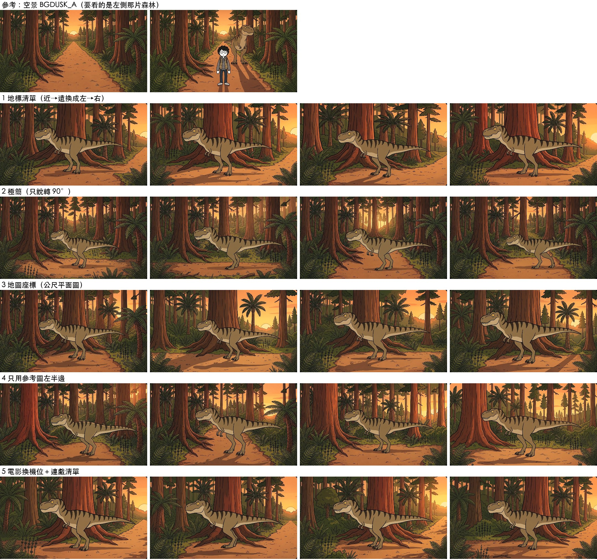
最上：空景 A 和量尺版。下面每列一種寫法，各 4 張。
五、鏡頭往後退 10 公尺
原本的景變遠、留在中間，近處出現新的景色。
只用文字說「往後退 10 公尺」 失敗
附空景、寫往後退。4 張幾乎就是原圖，樹和夕陽一樣大。
Prompt（中英對照）只用文字
Scene BACK10A, 16:9. Generate only 1 image. Flat 2D cartoon illustration in exactly the same style as the attached character reference sheets: thick clean black outlines, flat warm earthy colors, simple shapes, subtle paper texture. NOT realistic, NOT 3D, no extra shading, no sketchy hatching, no photographic lighting. No text, no letters, no numbers anywhere. The attached image BGDUSK_A shows a forest trail at sunset, seen from a camera about 3 meters above the trail. Draw the view after this camera moves straight BACK along the trail by 10 meters, at the same height and pointing in the same direction. Everything in BGDUSK_A is still in the picture, but farther away and smaller, in the middle of the picture: the same trail, the same trees in the same places, the same setting sun at the far end. Around it, new things that were behind the camera now come into view: in the foreground a new stretch of the same trail coming toward the camera, with new big reddish-brown conifer trunks, ferns and horsetails at the left and right edges framing the picture, and more treetops at the top. The light is the same sunset light as in BGDUSK_A. There are NO people and NO animals or dinosaurs anywhere in the picture. No text.
縮小放中間、四周塗灰，用圖庫生成補 失敗
有變遠的感覺，但中間的原圖被整張重畫。
Prompt（中英對照）圖庫生成補四周
Scene BACK10B, 16:9. Generate only 1 image. Flat 2D cartoon illustration in exactly the same style as the attached character reference sheets: thick clean black outlines, flat warm earthy colors, simple shapes, subtle paper texture. NOT realistic, NOT 3D, no extra shading, no sketchy hatching, no photographic lighting. No text, no letters, no numbers anywhere. The attached image BG_BACK10 is a forest trail at sunset in the middle, surrounded by a flat grey border. The grey border is what the camera sees after moving 10 meters back along the trail. Keep the picture in the middle exactly as it is, with every tree in the same place, and paint the grey border only, so that the whole image becomes one seamless picture: at the bottom, a new stretch of the same trail coming toward the camera; at the left and right, new big reddish-brown conifer trunks, ferns and horsetails that continue the forest; at the top, more treetops and sunset sky. No grey may remain. The light is the same sunset light as in the middle picture. There are NO people and NO animals or dinosaurs anywhere in the picture. No text.

第二列：只用文字；第三列：圖庫生成補四周。
第二批四個點子
- 失敗 模型補好後把原圖貼回中間：四周跟貼回的原圖接不起來。
- 近景重複 編輯畫面只補灰邊：中間保住了，但新補的近景是原本的近景再畫一圈（鏡中鏡）；第 1 次還有接縫。
- 失敗 畫布＋原空景兩張一起給：還是整張重畫。
- 失敗 直接編輯空景叫它往後退：幾乎沒變。
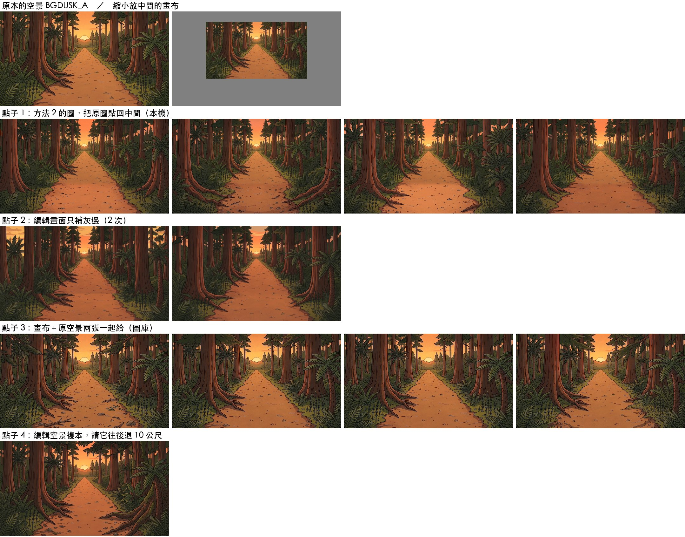
Prompt（中英對照）編輯畫面只補灰邊
Paint over the flat grey border only, so that the whole image becomes one seamless picture of the same forest trail at sunset, as seen after the camera moved 10 meters back along the trail: at the bottom a new stretch of the same trail coming toward the camera; at the left and right new big reddish-brown conifer trunks, ferns and horsetails continuing the forest; at the top more treetops and sunset sky. Do NOT change anything inside the picture in the middle: every tree, the trail and the sun there stay exactly as they are. No grey may remain. No people, no animals, no text.
Prompt（中英對照）畫布＋原空景
Scene BACK10C, 16:9. Generate only 1 image. Flat 2D cartoon illustration in exactly the same style as the attached character reference sheets: thick clean black outlines, flat warm earthy colors, simple shapes, subtle paper texture. NOT realistic, NOT 3D, no extra shading, no sketchy hatching, no photographic lighting. No text, no letters, no numbers anywhere. Two attached images: BGDUSK_A is a forest trail at sunset. BG_BACK10 is exactly that same picture made smaller and placed in the middle of a flat grey border. Paint the full picture BG_BACK10 should become: the middle part is BGDUSK_A and must stay exactly the same, tree for tree; the grey border becomes what the camera sees after moving 10 meters back along the trail: a new stretch of the same trail at the bottom, new big reddish-brown conifer trunks, ferns and horsetails at the left and right, more treetops and sunset sky at the top. No grey may remain. Same sunset light. There are NO people and NO animals or dinosaurs anywhere in the picture. No text.
Prompt（中英對照）直接編輯空景往後退
Move the camera 10 meters straight back along the trail, at the same height and facing the same way. Everything now in the picture becomes smaller and farther away in the middle of the frame, keeping every tree, the trail and the setting sun in the same arrangement, and new things come into view around it: a new stretch of the trail in the foreground, new big conifer trunks, ferns and horsetails at the left and right edges, more treetops at the top. Same style, same sunset light. No people, no animals, no text.
「貼回原圖」是我在電腦上做的，沒有 prompt。
編輯畫面補灰邊，指定補上新東西 成功（但等於原地換廣角）
整張縮成 60%（以消失點為中心）、四周塗灰、上傳，在編輯畫面請它只補灰色；prompt 點名外圍放倒木、大石頭、銀杏、水窪、被畫框切掉的細樹幹，寫「不要重複中間的排列」。程式 back10c.py。
Prompt（中英對照）補灰邊、點名新東西
Paint over the flat grey border only, so that the whole image becomes one seamless picture: the camera has moved 10 meters back along this forest trail at sunset, so the picture in the middle is now farther away, and the grey border shows the stretch of forest the camera has just walked back through. That stretch looks DIFFERENT from the middle picture: do NOT repeat the arrangement of trees that is in the middle picture. In the border, put these new things: on the left, close to the camera, a big fallen log lying along the side of the trail, covered in moss; on the right, close to the camera, a large mossy boulder with a young ginkgo tree beside it; at the bottom, the near part of the same dirt trail, wider because it is closer, with scattered fallen leaves, a few pebbles and a small muddy puddle; at the far left and far right edges, only thin dark tree trunks, partly cut off by the frame; at the top, the dark undersides of high branches and a strip of sunset sky. Do NOT change anything inside the middle picture: every tree, the trail and the sun there stay exactly as they are. The same sunset light comes from the far end of the trail. No grey may remain. No people, no animals, no text.
3 次都成功、沒接縫，新近景跟原圖不一樣。問題：整張等比例縮，夕陽也變小——真的往後退，夕陽大小不會變。這其實是「鏡頭不動、換廣角」的效果。

紅框＝原本的畫面。
照距離縮放：A 分兩層、B 照深度逐點縮 B 最好
Studio 用 Depth Anything 算深度圖（studio_depth.py），用量尺版的 HERO 腳底 10 m、TEEN 腳底 18 m、天空無限遠校正成公尺。A：60 m 外不縮、以內縮 60%。B：每一點縮成 z ÷ (z＋10)，近的蓋遠的，露出來的細紋清成灰色（dolly.py）。再用編輯畫面補（back10d.py）。
Prompt（中英對照）照深度縮放後補灰色
Paint over every flat grey area only: the grey border around the picture AND the grey gaps between and behind the trees, so that the whole image becomes one seamless picture. The camera has moved 10 meters back along this forest trail at sunset: the picture that is already there is now farther away, and the grey areas show what has newly come into view. The newly seen areas look DIFFERENT from the picture that is already there: do NOT repeat its arrangement of trees. In the grey areas, put these new things: on the left, close to the camera, a big fallen log lying along the side of the trail, covered in moss; on the right, close to the camera, a large mossy boulder with a young ginkgo tree beside it; at the bottom, the near part of the same dirt trail, wider because it is closer, with scattered fallen leaves, a few pebbles and a small muddy puddle; at the far left and far right edges, only thin dark tree trunks, partly cut off by the frame; in the gaps between the existing trees, the forest that was hidden behind them; at the top, the dark undersides of high branches and sunset sky. Do NOT change anything that is not grey: every tree, the trail and the sun stay exactly as they are. The same sunset light comes from the far end of the trail. No grey may remain. No people, no animals, no text.
A、B 的夕陽都跟原圖一樣大。B 最像真的往後退：最近的那棵大樹縮得最多，遠方幾乎不動。B 的畫布 71% 是灰色，新補的範圍很大。4 次都成功。
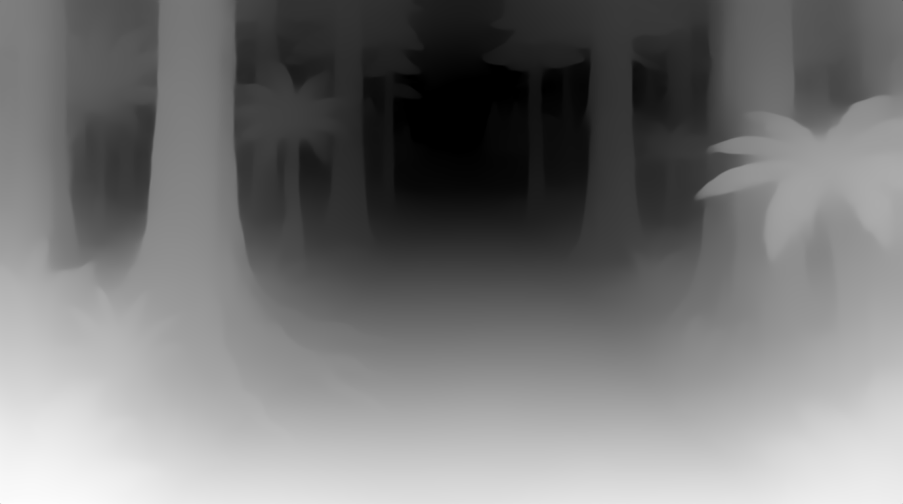
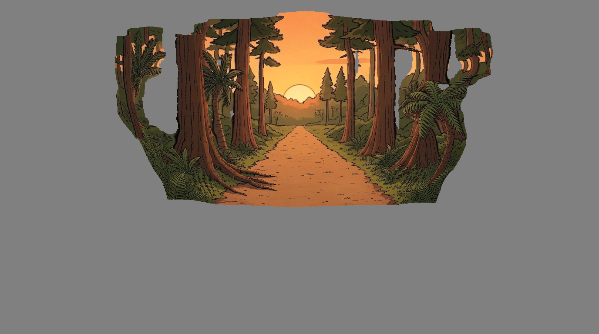
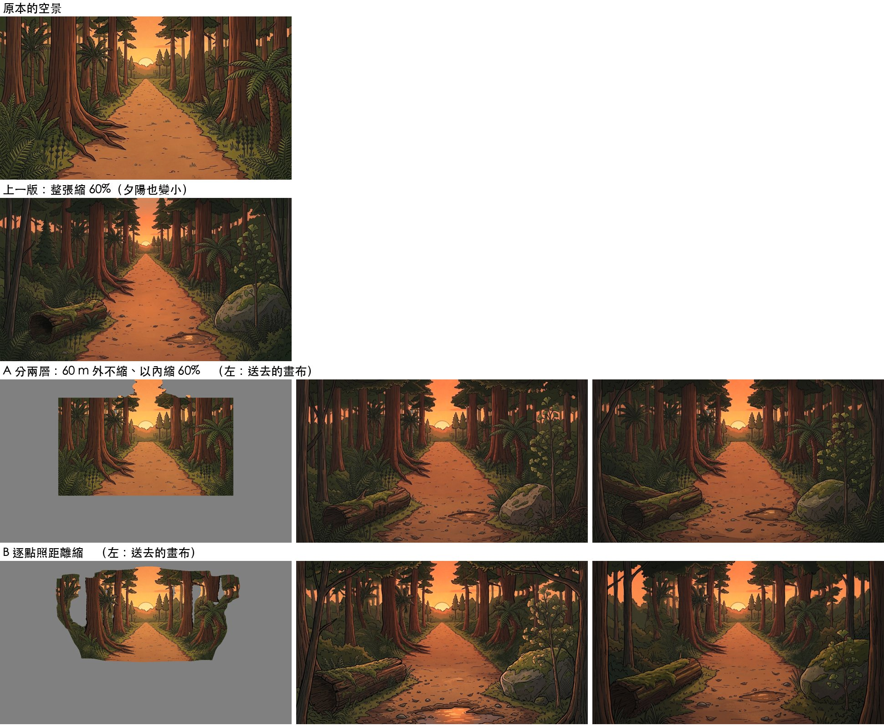
由上到下：原空景、整張縮 60%、A 分兩層、B 逐點縮（左＝畫布，右兩張＝補好的結果）。
共通規則
- 轉方向、往後退、裁近，不能只靠文字講。要先在電腦上把畫面擺好（縮小、裁切），或用很具體的位置描述（連戲清單）。
- 編輯畫面很會保留原圖。拿掉角色、補灰邊都靠它。但一次只出 1 張、可能要試 2～3 次；編輯會變成原圖的新版本，只能編輯定案的圖或專門上傳的複本。
- 要知道角色該多大，畫面裡就要有尺——量尺版。
- 模型愛照抄。參考圖有什麼就畫什麼；要它畫新東西，就點名新東西是什麼。
- 從別處搬來的 prompt 句子要逐句對新鏡頭檢查（小路方向、影子方向都抓到過矛盾）。
- 參考圖先改成唯一的名字再搜尋（
EXP Sxx、BGxxx）。
程式都在 scripts/flowbot/；細節也記在 WORKFLOW.md 和 skill dino-flow-prompt 第八節。